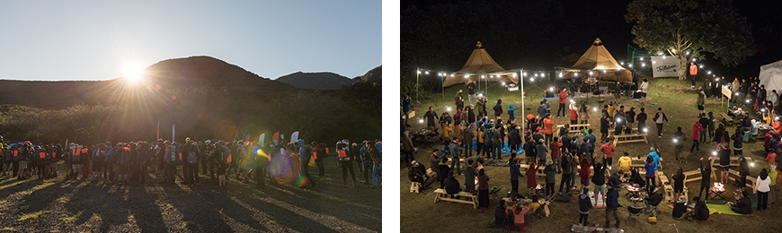

기획취재콘텐츠
- Home
- 제주라이프
- 기획취재콘텐츠
済州型レジャー産業、国内外の観光客を魅了する 3部새로운 글


自然を楽しみ愛する方法を学ぶ自然主義トレッキング、フェールラーベンクラシック
「フェールラーベンクラシック」は、スウェーデンのアウトドアブランドであるフェールラーベン(fjallraven)が実施するトレッキングアドベンチャーでより多くの人々が自然を楽しんで享受できるようにし、それにより自然をより大切にしたいという趣旨でスタートしたイベントで、単一ブランドで実施する最大規模のトレッキングイベントでもある。15年の歴史をもつフェールラーベンクラシックは、欧州・アジア・北米大陸で多様な気候と自然を世界数千のトレッカーたちが経験するチャンスを与え、それにより達成感と自然を愛する方法、自然の大切さを学ぶようにする。
- 世界各国のトレッカーたちが参加したフェールラーベンクラシックコリア2019 ⓒフェールラーベンコリア -
2005年にスウェーデンでスタートしたフェールラーベンクラシックは、より多様な地域でより多くの人々が自然を享受できるようにデンマーク・アメリカ・香港に次いで大韓民国が5番目のクラシック開催国に指定された。2019年10月9日~12日(第1次：9日~11日/第2次：10日~12日)にかけて済州で開かれたフェールラーベンクラシックコリアでは、およそ400名余り(韓国人300名、外国人100名)が参加して合計60kmのコースを歩いた。コースは△1日目：オリモク–ウィッセオルム–トンネコ(トンネコエンオウキャンプ場でキャンプ)△2日目：トンネコ–冬柏道–戊午法井寺(河源村キャンプ場でキャンプ)△3日目：戊午法井寺–トルオルム道–チョナ森道–ヘブロンヒールリゾート(フィニッシュ)にいたる行路だった。
大韓民国まで拡張されたフェールラーベンクラシック、済州を選ぶ
韓国でフェールラーベンクラシックが開催されるようになったきっかけは、多様な環境でより多くの人々が自然を楽しめるように開催国を増やして拡張していくブランドの哲学とも通じるところがあるが、情熱的な韓国人トラッカーたちの影響が大きい特別なケースと挙げられる。
クラシックスウェーデンには毎年200人以上の韓国人が参加します。クラシック香港も韓国からの参加者は半分以上で、デンマークでも50名以上参加しています。参加者数を順位でみるとさらに驚きますが、韓国人の参加者数はスウェーデンでは5位、デンマークでは3位、香港では1位です。それほど韓国のトレッカーたちが情熱をもっていて、クラシックの韓国開催にそれ以上の名分はなかったと思われます。その前の2018年には済州道で フォックストレッキングを実施しましたが、当時スウェーデンの担当者たちがそれを参観していました。その情熱が伝わったためか、2019年にフェールラーベンクラシックコリアを済州で正式にローンチすることができました
- キム・ムンギフェールラーベンクラシックコリア担当の
※ 3) フェールラーベンが主宰するアドベンチャーは△クラシック△ポラー△フォックストレッキングで分類され、それぞれの特徴は以下の通り。
- クラシック：2泊以上のトレッキングイベントで、合計8か国で開催される。各国の環境により開催時期やコースの難度、期間が異なる。数百から数千人が参加する大規模なアドベンチャーで、キャンプ装備やトレッキング装備を必ず自分のリュックに入れてそれを背負って完走するようになっている。また、環境と安全に配慮したフェールラーベンクラシックのルールを徹底的に守らなければならない。
- ポラー：毎年4月、4泊5日の日程で北極圏の300kmをイヌぞりに乗って横断する冬のエクストリームイベント。世界の各地からの応募を受けて20名を選抜するのだが、毎年数万名が応募している。フェイスブックに自分の個性が入った動画や写真資料を投稿し、投票で得票率が高い人がウィナーになり参加資格が与えられる。すべての費用と装置はフェールラーベンが提供する。
- フォックストレッキング：フェールラーベンクラシックコリアのローカルバージョンで、韓国で最も人気の高いトレッキングアドベンチャー。2015年から10回も開催され、毎年春になると韓国内あちこちで行われる。参加者数は300名程度で、韓国人にフェールラーベンクラシックを間接体験させる。
済州道をクラシック会場にした理由は、韓国一象徴的で有名な場所であると同時に自然景観や環境が世界どこと比べても劣らないからである。また、韓国で開催されるクラシックは当然ながら韓国人の参加者が最も多くなるはずだが、彼らにも長時間休みを取ってクラシックに参加できるような象徴的な場所を提供したいと思っていて、それの答えは済州道だったという。
- 荘厳な景観を誇る漢拏山オリモクコースを歩いているトレッカーたち。 オルムの稜線の向こうに白鹿潭がそびえ立っている。ⓒフェールラーベンコリア -
その選択は正しかった。済州を象徴する漢拏山コースに対する参加者たちの満足度は非常に高かった。難度は少し高かったものの、天気が良かったため外国人参加者はもちろんみんなが特別な景色が楽しめたという。2~3日目は漢拏山トゥルレ道の美しい森道を歩くコースで、1日目よりは歩きやすく涼しい森道を歩きながら癒されたという評価が相次いだ。フェールラーベンコリア側は引き続きコースを修正しながらクラシック参加者たちが漢拏山とトゥルレ道の森、海など済州の自然景観が満喫できるようにする予定だ。
今後も自然を愛して楽しむ方法を発信するチャンスを作っていく
フェールラーベンクラシックの場合、数百人の参加者が同じ日に同じコースを歩くことになるが、フェールラーベンコリアはそのため参加者たちが通り過ぎた跡が毀損され、痕跡が残るのは大会の趣旨にそぐわない結果で、決して妥協できないことを重ねて強調した。
大会の参加者全員にフェールラーベンクラシックのルールを何回も説明するなど教育を実施するが、ほとんどの参加者はそれを完全に受け入れて理解するという。クラシックから初めてトレッキングとバックパッキングに接した参加者には、イベント参加そのものがトレッキングのエチケットや自然を保護する姿勢を自然に身に着ける教育の機会になるわけだ。このようにフェールラーベンクラシックは、主催者と参加者がみんな自ら監視者となり自然を大切に保護し、それで自然を持続可能な形で楽しめるという姿勢をもてるようにする努力を惜しまない。

- フェールラーベンクラシックコリア2019に参加したトレッカーたち ⓒフェールラーベンコリア -
クラシックコリアは毎年秋の済州で、フォックストレッキングは毎年春に内陸地域で開催される予定だが、頻繁に大会が開かれるのは持続的により多くの多様な人々が自然を大切にしながら楽しめる方法とチャンスを提供することが重要だからだという。自然があってこそ人間が存在し、自然を大切にして楽しめる人々が増えてこそブランドが存続できるというフェールラーベンコリアの哲学を確認することができた。
フェールラーベンは今後もより多くの国家でクラシックを実施する計画で、2020年からイギリス、中国、ドイツ大会を追加してこれからは8か国でクラシックが開かれることになる。
※ 2020年は新型コロナウイルスのため、世界のクラシック大会がすべてキャンセルまたは2021年に延期された。
이전글
다음글